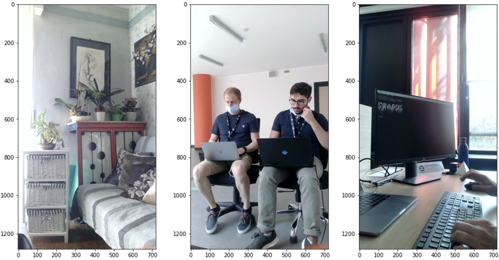
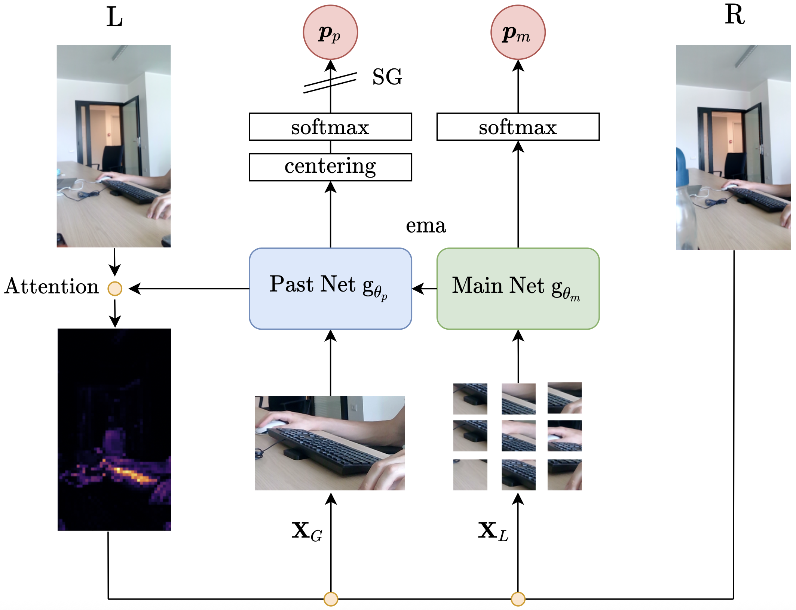
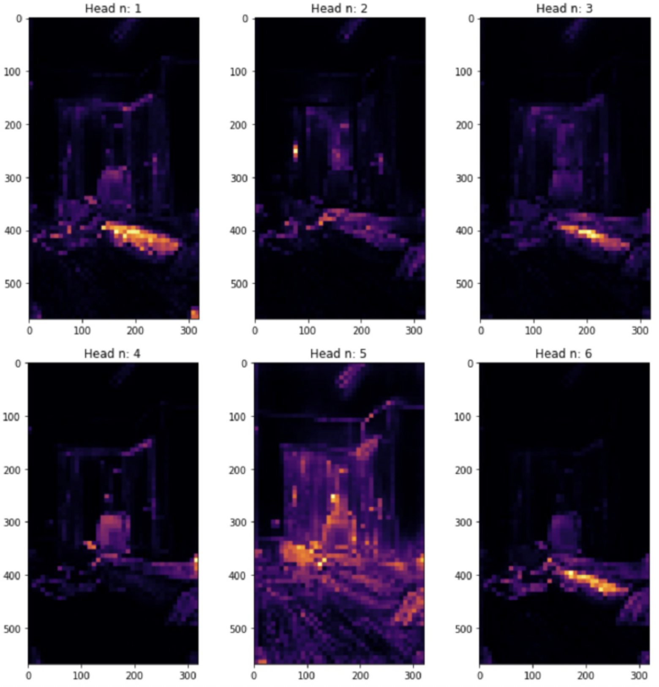
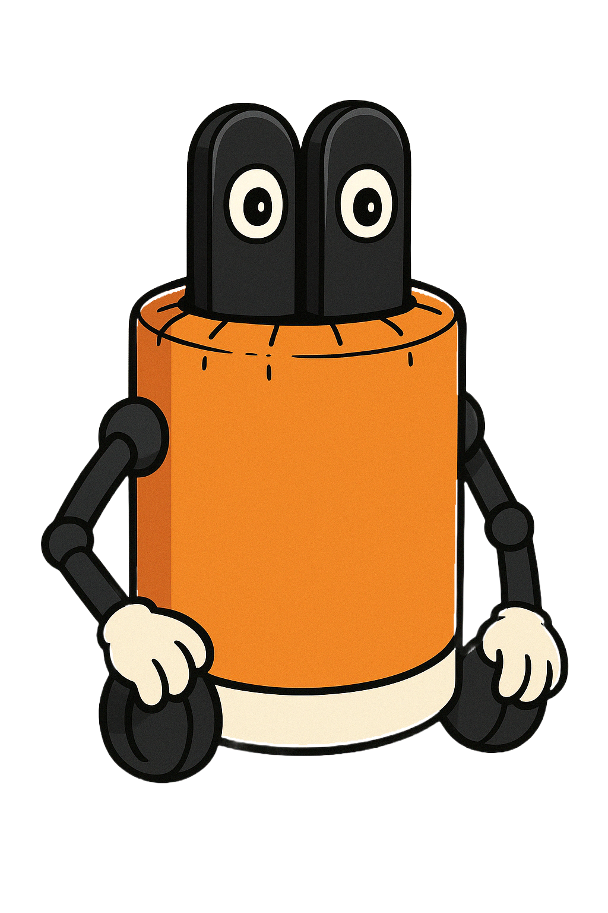

BabyAgent - Self-supervised Learning Beyond Internet Data
A playful experiment me and my colleagues Vittorio and Francesco worked on some years ago (2021). Though the idea was kinda cool and the results started looking promising, we dropped it for other projects. Still, our Baby lives in our hearts and I thought it was worth sharing.
There is a subtle yet remarkable difference between how modern deep learning algorithms and “living beings” learn: they always work with a fixed and pre-processed dataset. That has two main implications: firstly, models acquire knowledge by constantly cycling over the same patterns. Secondly, datasets contain biases introduced by the authors. For instance, in a typical image classification problem, a dataset typically features well-defined subjects in the center of the field of view; blurring, chromatic aberrations, and other image defects are not present and only simulated through data augmentation. On the other hand, signals acquired by animals are much richer, and their learning algorithms must contend with challenges that current deep learning models do not encounter. For instance, deal with multiple and imprecise subjects in a scene. In other words, they learn from real-world scenes, not imitations of them.
In June 2021, driven by these intuitions, we initiated a preliminary research project, dubbed BabyAgent, to investigate the role of datasets and learning algorithms in visual perception generalization. It is crucial to premise that at the time of writing, the presented research is an active and ever-changing project, but with clear and precise goals: apply the same concepts to a stream of images and architectural priors equivariant to affine transformations. Indeed, we are convinced that object movements in the real world are key to learning robust representations.
The first objective of BabyAgent was to devise a system capable of learning from an ever-changing stream of real-world data scenes and then introspect its learned representations. So, no longer working with a defined dataset, but similar to living beings, with images captured daily. Nevertheless, it is essential to reiterate that all data are presented as preliminary results, and this appendix is primarily devoted to introducing the main ideas underlying the research presented.

Figure B.1: BabyAgent's prototype is placed at the center of the photo collage. Since its creation, the device has been deployed in the real world by many researchers at PIC4SeR.
1. A Plastic Shell with Two Eyes
The first step in the research was to design and construct a device capable of continuously capturing real-world scenes. Figure B.1 shows the prototype of the BabyAgent project at the center of the photo collage. It is a cylinder shell printed in Polylactic Acid (PLA) featuring two HD cameras at the top. It is powered by a large 20,000 mAh power bank and a Raspberry Pi 3 B+ to carry out computations. A practical USB connector on the top of the device allows charging the battery at the end of the day.
The agent is programmed to automatically capture images from its two cameras. An internal algorithm continuously checks the similarity between previous pictures and discards new acquisitions if the similarity score exceeds a particular threshold. After that, when the number of stereoscopic images acquired reaches a predefined value, the device exploits its network adapter and a known wireless network to send data to a central server through the File Transfer Protocol (FTP). The server acts as a data collector and training core. Indeed, once the device is in sleep mode, it trains the current model using data acquired during the day. Subsequently, it stores exploited images and brings some percentage of random samples from memory for future training.
The device’s practical structure enables easy transportation to various locations worldwide. Three examples of acquired images are presented in Figure B.2. Real-world scenes often feature multiple subjects or a subject that is not immediately apparent. Therefore, a learning algorithm should not only address the lack of labels but also tackle all the challenges posed by real-world scenes.

Figure B.2: Example of scenes acquired by the first BabyAgent prototype. It is clear how a familiar real-world scene contains multiple subjects or no clear subject at all.
2. Methodology
For this first part of the BabyAgent research project, we focused on the training methodology and data, setting aside the specific model architecture. Therefore, the reference backbone is not relevant. Nevertheless, even if the learning algorithm is adaptable for any deep learning architecture, for all experimentation, we adopt the DeiT architecture [1].
Inspired by [2] and [3], we develop a self-supervised methodology capable of learning representations from real-world data. The methodology is summarized in Figure B.3. As for [2], the training procedure includes a network \(g_{\theta_m}\) and its past version, \(g_{\theta_p}\). The primary objective of the training procedure is to enable the model to establish coherence between its current and past representations.

Figure B.3: Graphical representation of the self-supervised methodology that drives BabyAgent learning. It builds on DINO, in which a network has to find coherence between its present and past representations. The attention of the past network is exploited to find the most suitable crop for the scene. Subsequently, the past and main networks are fed with crops performed in the exact location on the left and right eyes, respectively.
We begin with a pair of stereoscopic images that have a similar field of view but differ slightly in their subjects, depending on the depth of the scene. To solve the multi-object problem, we utilize the inner attention mechanism of the past network to identify points of interest in the scene. In the specific case of the DeiT architecture, we look at the attention map when using the \(\texttt{[CLS]}\) token as a query for the different heads. That produces an attention map for each head as shown in Figure B.4. We randomly select one of the heads and then fit a Gaussian distribution to the chosen map to determine the attention center and spread, using the model’s mean and standard deviation. Subsequently, we exploit the acquired information to perform a focused crop of the left image, \(\mathbf{X}_G\), and $N$ small crops in the same location in the right acquisitions, \(\mathbf{X}_L\). The latest feed to the main network is \(g_{\theta_m}\), and the large crop feeds the past network, \(g_{\theta_p}\). Both branches process their inputs, and through two projection heads with softmax placed on top of their respective networks, they produce \(N+1\) probability distributions. Then, using the following loss function
\[\sum_{\mathbf{X}\in\mathbf{X}_L} −P_p(\mathbf{X}_G)\ \text{ln}(P_m(\mathbf{X})) + \lambda \sum_{\mathbf{X}_i\in\mathbf{X}_L} −\text{ln} \frac{1}{\sum^N_{j=1} 1_{[j\neq i]}\ e\ ^{sim(\mathbf{X}_i,\mathbf{X}_k)/\tau}}\]it is possible to train the main network through back propagation. \(sim(\mathbf{u},\mathbf{v})\) denotes the dot product between \(l_2\) normalized \(\mathbf{u}\) and \(\mathbf{v}\)
\[sim(\mathbf{u},\mathbf{v})=\frac{\mathbf{u}^\intercal\mathbf{v}}{\Vert \mathbf{u} \Vert \Vert \mathbf{v} \Vert}\]where \(P_p\) and \(P_m\) are the probability distributions produced by the past and main networks’ projection heads, respectively. Finally, \(\lambda\) is a balancing coefficient between the two loss contributions, and \(\tau\) denotes a temperature parameter. The first loss component is a cumulative cross-entropy function between the distribution produced by the past network and all distributions generated by the main network fed with the set of small local crops \(\mathbf{X}_L\). From an intuitive point of view, it aims to bring local patch representations closer to the global one, creating coherence between the past and main networks. On the other hand, the second contribution, weighted by \(\lambda\), pushes slightly apart all local patches among them. That is necessary because local patches cannot present the same subject. Therefore, it acts as a regularization mechanism. Finally, the past network is not updated by backpropagation (it adopts a stop-gradient operation (SG)) but with an exponential moving average of the main network weights:
\[\theta_p \leftarrow \alpha \theta_p + (1−\alpha)\theta_m\]As in [2], to avoid the collapse of the self-supervised training, probability distributions \(P_p\) generated by the past network are centered and sharpened. The first is similar to a bias added to the output softmax and updated using an exponential moving average (EMA); it prevents one dimension from dominating and encourages the distribution to collapse towards uniformity. Therefore, to further avoid this problem, we follow the same data augmentations of BYOL [4] for global and local patches. On the other hand, the sharpening operation is achieved by using a low value for the past network’s softmax temperature parameter. It contrasts the centering effect, balancing the overall training.

Figure B.4: Example of attention maps computed by the past network after two months of training. We look at the attention map when using the [CLS] token as a query for the different heads in the last layer of the DeiT architecture. Each head focuses on a different portion of the scene.
3. Preliminary Experiments
As previously stated, the presented research is an active project, and all data are intended as preliminary results. At the time of writing, the network has completed a dozen training iterations, and the device acquires new images on a daily basis.
3.1. Experimental Settings
We started collecting data at the end of July 2021, acquiring an average of 600 images per day. The training procedure is triggered once 1,500 samples have been acquired and the device has been offline for at least one hour. The memory recovery is set to 15% of the number of training samples. The network architecture selected is the DeiT-S [1]. For each new training, the dataset is bootstrapped for 50 epochs with a batch size of 128. The learning rate is set to \(5\times10^{-4}\) with a cosine scheduler [5]. We adopt AdamW [6] as the optimizer, with a weight decay controlled by a cosine scheduler that starts at 0.001 and gradually increases to 0.2. The temperature \(\tau\) of the main net is set to 0.05 and \(\lambda\) to a fixed value of 0.1. We employ the PyTorch framework to train the proposed network on a PC equipped with 64 GB of RAM, an Intel Core i7-9700K CPU, and two NVIDIA GeForce RTX 2080 Ti GPUs.
3.2. Evaluation Protocol and Learning Follow-up
Without a standard dataset, it is impossible to assess the learning process with a validation or test set. Therefore, we adopt the standard protocol for evaluating self-supervised training: learn a linear classifier on top of frozen features of some control datasets. Moreover, to more directly verify the effectiveness of the latent space generated by the network, we fit a simple k-NN classifier on a small subset of samples from the control datasets. The nearest neighbor classifier then matches the feature of an image to the k nearest stored features and votes for the corresponding label. We adopt the cosine similarity as the distance metric. In contrast to other distance metrics, the cosine similarity loses a dimension, but it provides the possibility to drastically accelerate computation using a GPU.
| Day | MNIST | CvD | CIFAR | Art | Cartoon | Sketch | Photo |
|---|---|---|---|---|---|---|---|
| 0 | 0.8383 | 0.6632 | 0.1508 | 0.3125 | 0.6496 | 0.3542 | 0.5781 |
| 1 | 0.8539 | 0.6691 | 0.1714 | 0.4219 | 0.6830 | 0.4570 | 0.6750 |
| 2 | 0.8635 | 0.7324 | 0.1930 | 0.4297 | 0.6875 | 0.5065 | 0.7563 |
| 3 | 0.8793 | 0.7504 | 0.1972 | 0.4505 | 0.7054 | 0.5508 | 0.7563 |
| 4 | 0.8936 | 0.7313 | 0.2147 | 0.4479 | 0.6674 | 0.6185 | 0.7438 |
| 5 | 0.8786 | 0.7526 | 0.2107 | 0.4818 | 0.6875 | 0.6224 | 0.7781 |
| 6 | 0.8947 | 0.7237 | 0.2260 | 0.4948 | 0.6897 | 0.5326 | 0.7719 |
| 7 | 0.8803 | 0.7578 | 0.2300 | 0.4557 | 0.7076 | 0.4284 | 0.7625 |
| 8 | 0.8928 | 0.7541 | 0.2358 | 0.4948 | 0.6897 | 0.5703 | 0.7688 |
| 9 | 0.9012 | 0.7628 | 0.2492 | 0.5156 | 0.6987 | 0.5938 | 0.7763 |
Table B.1: BabyAgent learning progression over a 10-day temporal window. A linear classifier is learned on top of frozen features for some control datasets.
To follow-up the training procedure, we select four small datasets, MNIST [7], Dogs vs. Cats [8], CIFAR10 [9] and the four domains of the PACS dataset [10]. Moreover, we also consider the validation sets of ImageNet [11] and CIFAR-100 [9] to evaluate the network on more challenging tasks. Therefore, the new main model is automatically assessed after a training session on those datasets with the evaluation protocol described before.
In Table B.1 and Table B.2 report the preliminary results for the linear and k-NN classifiers, respectively. In both cases, it is clear how the network progressively learns more discriminating representations that allow for better separation of classes and form a closer cluster of more similar features. It is worth noticing how representations are remarkably generic: selected control datasets have a very different nature, but an improvement is perceptible in all of them. Moreover, some preliminary tests on the robustness of representations showed encouraging results. Indeed, the network has also been tested applying rotations of different degrees (up to \(40^\circ\)) to all control datasets. Surprisingly, there was no noticeable deviation: results have an average standard deviation of \(\sigma=0.01\).
| Day | MNIST | CvD | CIFAR | Art | Cartoon | Sketch | Photo |
|---|---|---|---|---|---|---|---|
| 0 | 0.7358 | 0.6215 | 0.0825 | 0.3359 | 0.5714 | 0.4362 | 0.5406 |
| 1 | 0.7819 | 0.6615 | 0.1054 | 0.3724 | 0.5960 | 0.4609 | 0.6344 |
| 2 | 0.8312 | 0.6764 | 0.1271 | 0.4036 | 0.6317 | 0.4948 | 0.6938 |
| 3 | 0.8558 | 0.7096 | 0.1503 | 0.3906 | 0.6027 | 0.5130 | 0.7094 |
| 4 | 0.8646 | 0.7146 | 0.1549 | 0.4010 | 0.6496 | 0.5365 | 0.7063 |
| 5 | 0.8644 | 0.7177 | 0.1579 | 0.4036 | 0.6384 | 0.5273 | 0.7031 |
| 6 | 0.8576 | 0.7120 | 0.1642 | 0.4245 | 0.6429 | 0.5560 | 0.7000 |
| 7 | 0.8565 | 0.7214 | 0.1675 | 0.4036 | 0.6451 | 0.5586 | 0.7219 |
| 8 | 0.8624 | 0.7329 | 0.1774 | 0.4115 | 0.6496 | 0.5547 | 0.7125 |
| 9 | 0.8635 | 0.7331 | 0.1787 | 0.4271 | 0.6563 | 0.5742 | 0.7344 |
Table B.2: BabyAgent learning progression over a 10-day temporal window. A simple nearest neighbor classifier (k-NN) is fitted on 10% of samples of the selected control datasets. The nearest neighbor classifier then matches the feature of an image to the $k$ nearest stored features and votes for the corresponding label.
It has already been stressed many times: BabyAgent is an ongoing project, and the primary aim of this appendix is to share the idea behind this research. However, preliminary results show auspicious data, giving confidence in its current form and future developments. Work on its evolution has already begun, scaling the proposed framework to real-world video sequences and adopting an architecture that incorporates the necessary priors to embed a visual model of our world efficiently.
References
[1] Touvron, H., Cord, M., Douze, M., Massa, F., Sablayrolles, A., & Jégou, H. (2021). Training data-efficient image transformers & distillation through attention. In International conference on machine learning (pp. 10347-10357). PMLR.
[2] Caron, M., Touvron, H., Misra, I., Jégou, H., Mairal, J., Bojanowski, P., & Joulin, A. (2021). Emerging properties in self-supervised vision transformers. In Proceedings of the IEEE/CVF international conference on computer vision (pp. 9650-9660).
[3] Chen, T., Kornblith, S., Norouzi, M., & Hinton, G. (2020). A simple framework for contrastive learning of visual representations. In International conference on machine learning (pp. 1597-1607). PMLR.
[4] Grill, J. B., Strub, F., Altché, F., Tallec, C., Richemond, P., Buchatskaya, E., … & Valko, M. (2020). Bootstrap your own latent-a new approach to self-supervised learning. Advances in neural information processing systems, 33, 21271-21284.
[5] Vaswani, A., Shazeer, N., Parmar, N., Uszkoreit, J., Jones, L., Gomez, A. N., … & Polosukhin, I. (2017). Attention is all you need. Advances in neural information processing systems, 30.
[6] Loshchilov, I., & Hutter, F. (2017). Fixing weight decay regularization in adam. arXiv preprint arXiv:1711.05101, 5, 5.
[7] LeCun, Y., Boser, B., Denker, J., Henderson, D., Howard, R., Hubbard, W., & Jackel, L. (1989). Handwritten digit recognition with a back-propagation network. Advances in neural information processing systems, 2.
[8] Will Cukierski. Dogs vs. Cats. https://kaggle.com/competitions/dogs-vs-cats, 2013. Kaggle.
[9] Krizhevsky, A., & Hinton, G. (2009). Learning multiple layers of features from tiny images.
[10] Li, D., Yang, Y., Song, Y. Z., & Hospedales, T. M. (2017). Deeper, broader and artier domain generalization. In Proceedings of the IEEE international conference on computer vision (pp. 5542-5550).
[11] Russakovsky, O., Deng, J., Su, H., Krause, J., Satheesh, S., Ma, S., … & Fei-Fei, L. (2015). Imagenet large scale visual recognition challenge. International journal of computer vision, 115, 211-252.
Acknowledgements
Many thanks Vittorio and Francesco for the fun time we spent together working on this project. I hope to see you soon!
